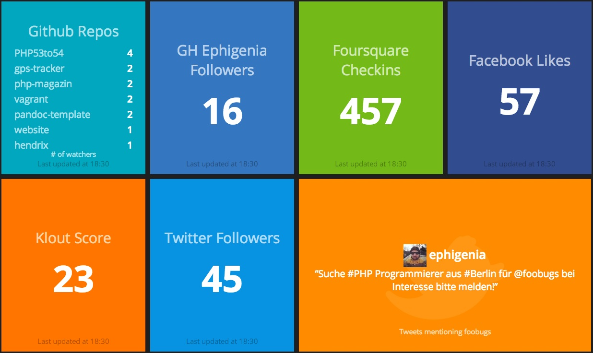

Dashing Dashboards
In the last year and a half, I set up a Ruby based Dashing dashboard for my team and others in our product area. Here’s what a sample Dashing dashboard looks like:

It’s been a huge success, but it was tough to gain traction along the way. Here I’ll summarise what I’ve learned (in no particular order):
- Don’t do dashboards for managers, do them for teams
- Use big text, have the minimum information as required
- Use colours (preferably like the traffic light system) to focus attention
- Link in all critical systems to daily work
- Make it a one stop shop and faster then all other methods of getting this information
- Reuse the work of others (steal with pride)
- Don’t bother with graphs
Below I outline the reasons for each point:
Fill hours worked in SAP Netweaver Automatically
Continuing the theme of automation, one of the most repetitive tasks if you work for a big company is timesheets. So I set out to rectify this by scripting it!
Start with you configuration, I named mine hours.ini:
[DEFAULT]
url = FILL_ME_IN
username = FILL_ME_IN
password = FILL_ME_IN
then we need the magic of Selenium to do the heavy lifting, so we install it:
$ pip3 install selenium
I called this script, unsurprisingly hours.py:
Automated 'Push' Restaurant menu
I love trying to automate the world, it just feels like magic some of the time! I also really enjoy information coming to me, instead of having to seek it. As we are still only in 2016, we have no world killing Artificial Intelligence (yet). So we have to start small, ease the first world problems! So I decided to make my workplaces’ restaurant menu come to me!
I decided to write it in Ruby and use push notifications, rather than email or SMS. It uses a web automation framework called Selenium, which is available in many languages, including Javascript, Python, Java and obviously Ruby!
Adventures with Docker
I’m a huge fan of Docker ever since I started to use it, approximately a year after it was started. It’s one of those technologies where when you start to use it, you immediately know it’s going to be a sea change in how things are done in the industry. It’s definitely going to be more impactful then Virtual Machines.
We’ve used Docker to great effect where I work. We’re building a huge system called Ericsson Network Manager, which will manage the networks of the future. As such, it’s a hugely complex problem to compartmentalise parts of the product, to be able to just use the part that you work directly on.
Deliveries App
Deliveries helps you track packages from major shopping (Amazon, Apple) as well as nearly every major package distribution company like DHL, UPS and FedEx. I’ve used the app for years and it’s really impressed me.
It can sync via iCloud or the Junecloud cloud service by the makers of the app, Junecloud (not confusing at all, hey!). It started on the Mac as a simple dashboard widget (for those of you who remember those, rarely used these days), but it’s since grown to have its own Mac app also. Considering many people will have a lot of packages coming from everywhere this Christmas, it’s definitely a really useful app to have!
Adventures with React
Recently I’d seen a post on Hacker News about a course for the React JavaScript Framework. I haven’t done much with JavaScript, apart from a course in work, which was focused on the language itself and jQuery. React is a front end framework, which allows you to build reusable components (and generate them with data.)
The only real experience I have is writing an application (using Node.js) for my MSc course which was an AJAX application for interacting with Amazon SimpleDB. It was fun to write and weird that I could use the same language from the front-end to the back-end.
Automatically Decline and Delete or Accept and Delete Outlook 2010 Meetings
You can follow the Microsoft TechNet guide to add VisualBasic code in Outlook rules.
You can just replace the code they give with this:
Sub AutoDeclineMeetings(oRequest As MeetingItem)
' If its not a meeting, we don't process
If oRequest.MessageClass <> "IPM.Schedule.Meeting.Request" Then
Exit Sub
End If
' Get the appointment in the meeting
Dim oAppt As AppointmentItem
Set oAppt = oRequest.GetAssociatedAppointment(True)
' Send a decline response
Dim oResponse
Set oResponse = oAppt.Respond(olMeetingDeclined, True)
oResponse.Send
' Lastly, delete the message
oRequest.Delete
End Sub
Sub AutoAcceptMeetings(oRequest As MeetingItem)
' If its not a meeting, we don't process
If oRequest.MessageClass <> "IPM.Schedule.Meeting.Request" Then
Exit Sub
End If
' Get the appointment in the meeting
Dim oAppt As AppointmentItem
Set oAppt = oRequest.GetAssociatedAppointment(True)
' Send an accept response
Dim oResponse
Set oResponse = oAppt.Respond(olMeetingAccepted, True)
oResponse.Send
' Lastly, (optionally) delete the message
'oRequest.Delete
End Sub
For anything else you may want to do with the meeting, check the Outlook Visual Basic Developer Docs.
Editorial App
Editorial is an iPhone and iPad plain text editor that’s great for markdown1. It also has some nifty automation workflows, in which you can use Python scripts. These can search the web, scrape data, transform text and much more…
I pretty much wrote this blog post (and many more) in Editorial. It’s much better then the competition for markdown in particular. Byword is an obvious competitor, which I really can’t recommend (nothing inherently wrong with Byword, just doesn’t suit me). MacStories has an in -depth Editorial review, which is well worth a long read.
Go Bag(s)
I follow Casey Liss’ blog and recently he had a great post about a technology “go pack”. Lifehacker has written about this over the years, and the Wirecutter has a great article I shared here on this very blog. Also Casey linked to a great post by Katie Floyd on Twitter:
https://twitter.com/KatieFloyd/status/630707145999314946
I finally took the hint / inspiration from all these posts, and I decided time was right to put together my own “go bag”. Here’s a picture of my tech go bag:
Services I pay for
In alphabetical order:
- Amazon.com / Amazon.co.uk - usually buy electronics here!
- Apple’s App Store - I use iOS & Mac heavily, buy a lot of apps!
- Dropbox - sync files across computers
- Evernote - I store a lot of notes here.
- Fastmail - My email, contacts, calendars
- Hover - great place for domain names (like this one).
- Lastpass - excellent password manager
- Newsblur - Personalized RSS for news junkies
- Pinboard - stores all my bookmarks (also archives the sites)
- Trello - I’m planning a holiday via Trello
Some of these are referral links, I stand to get extra credit on these services if you use it.